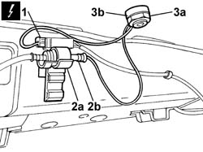
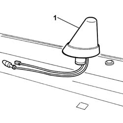

5570T20 radio aerial amplifier - r r
- Path
- Procedures > 55 ELECTRICAL EQUIPMENT > 5570 ACCESSORIES > 5570T car radio and car telephone > 5570T20 radio aerial amplifier - r r
- Kind
- repair procedure (removal / refitting; the operation number is the code)
- Applies to
- all engines; all production periods
- Interactive page
- https://sloeber94.github.io/elrnDB-fPnd/en/#/2752998
Applies to: all engines; all production periods
Applies to: all engines; all production periods
 Removing
Removing
 Refitting
Refitting7040H30 front pillar trim - r r (Both)
7040L42 sill plate connection of one front door (1), lh or rh - r r
7040L40 front compartment scuff strip - r r (Both)
7040H36 central trim lower element - r r (Both)
7040H38 central pillar upper element - r r (Both)
7050A20 one-piece rear seat cushion - r r
7040H50 rear panel - r r (Both)
7040H66 LEFT REAR SIDE TRIM, WITH REAR PARCEL SHELF SUPPORT - R.R .
7040H67 RIGHT REAR SIDE TRIM, WITH REAR PARCEL SHELF SUPPORT - R.R .
7065C30 interior l/h or r/h grab handle (one) - r+r (All)
7040E10 front courtesy light - r+r
7065C34 l/h or r/h sun blind (one) - r+r (Both)
7040H10 roof panel lining - r r
5570T26 aerial for car radio - r+r
1. Disconnect the electrical connection.
 | Name | Connector |
|---|---|---|
1 | Aerial amplifier/power supply | P25 |
2. Open the retaining clip (2a) and disconnect the coaxial cable (2b).
3. Undo the fixing nut (3a) and recover the spacer (3b).

Applies to: all engines; all production periods
1. Remove the aerial mounting / amplifier.

Applies to: all engines; all production periods
Refitting
RemovingFit the aerial mounting / amplifier.
Fit the spacer and tighten the fixing nut.
Connect the electrical connection.
| Name | Connector |
|---|---|---|
- | Aerial amplifier/power supply | P25 |
Connect the coaxial cable and secure it with the retaining clip.
5570T26 aerial for car radio - r+r
7040H10 roof panel lining - r r
7065C34 l/h or r/h sun blind (one) - r+r (Both)
7040E10 front courtesy light - r+r
7065C30 interior l/h or r/h grab handle (one) - r+r (All)
7040H67 RIGHT REAR SIDE TRIM, WITH REAR PARCEL SHELF SUPPORT - R.R .
7040H66 LEFT REAR SIDE TRIM, WITH REAR PARCEL SHELF SUPPORT - R.R .
7040H50 rear panel - r r (Both)
7050A20 one-piece rear seat cushion - r r
7040H38 central pillar upper element - r r (Both)
7040H36 central trim lower element - r r (Both)
7040L40 front compartment scuff strip - r r (Both)
7040L42 sill plate connection of one front door (1), lh or rh - r r
7040H30 front pillar trim - r r
Connect the battery terminals.
Topics linked from this page (15)
- 5570T26 aerial for car radio - r+r
- 7040E10 front courtesy light - r+r
- 7040H10 roof panel lining - r r
- 7040H30 front pillar trim - r r
- 7040H36 central trim lower element - r r
- 7040H38 central pillar upper element - r r
- 7040H50 rear panel - r r
- 7040H66 LEFT REAR SIDE TRIM, WITH REAR PARCEL SHELF SUPPORT - R.R .
- 7040H67 RIGHT REAR SIDE TRIM, WITH REAR PARCEL SHELF SUPPORT - R.R .
- 7040H80 parcel rack
- 7040L40 front compartment scuff strip - r r
- 7040L42 sill plate connection of one front door (1), lh or rh - r r
- 7050A20 one-piece rear seat cushion - r r
- 7065C30 interior l/h or r/h grab handle (one) - r+r
- 7065C34 l/h or r/h sun blind (one) - r+r